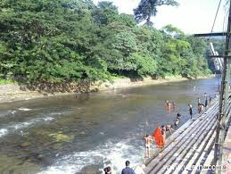
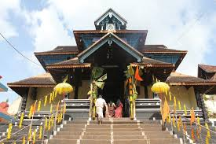

Pampa River
This is the main halting point on the way to Sabarimala. It is also known as Thriveni Sangamam – the meeting point of three rivers. The pilgrims can reach Chengannur Railway station by train and from there by bus to Pampa.

Previous
Next
Aranmula
Aranmula is a little temple town in Pathanamthitta District, surrounded by undulating green hillocks and girdled by the holy river Pampa. The temple here is dedicated to Lord Krishna.Aranmula is also famous for its metal mirrors made of bell meta which is known as ‘Aranmula Kannadi’.
Pathanamthitta is a municipality situated in the Central Travancore region in the state of Kerala, India,
spread over an area of 23.50 km2. It is the administrative capital of Pathanamthitta district. The town has
a population of 37,538. The Hindu pilgrim centre Sabarimala is situated in the Pathanamthitta district;
as the main transport hub to Sabarimala, the town is known as the 'Pilgrim Capital of Kerala'.
Pathanamthitta District, the thirteenth revenue district of the State of Kerala, was formed with effect
from 1 November 1982 vide G.O. (M.S) No.1026/82/RD dated 29 October 1982, with headquarters at Pathanamthitta.
Forest covers more than half (1396.95 km2.) of the total area of the District. Pathanamthitta District
ranks the 7th in area (2652 sq. km.) in the State.